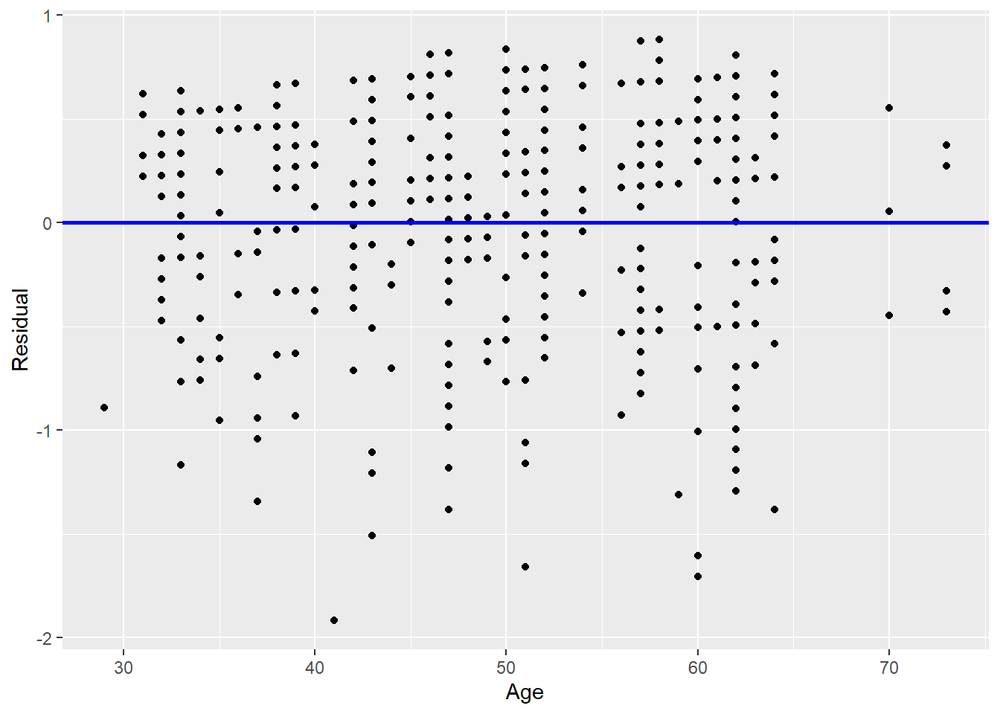

library(tidyverse)
library(tidymodels)
library(moderndive)
library(gapminder)
library(skimr)
library(mvtnorm)
library(gridExtra)
library(ISLR)Week 3 Tasks Solutions
Tasks
- Examine the relationship between teaching score and age in the
evalsdata set. What is the value of the correlation coefficient? How would you interpret this verbally? Finally, produce a scatterplot of teaching score and age.
evals.age <- evals |>
select(score, age)
evals.age |>
get_correlation(formula = score ~ age)# A tibble: 1 × 1
cor
<dbl>
1 -0.107ggplot(evals.age, aes(x = age, y = score)) +
geom_point() +
labs(x = "Age", y = "Teaching Score",
title = "Relationship between Teaching Score and Age")
- Perform a formal analysis of the relationship between teaching score and age by fitting a simple linear regression model. Superimpose your best-fitting line onto your scatterplot from Task 1.
evals.age <- evals |>
select(score, age)
model <- linear_reg() |> fit(score ~ age, data = evals.age)
model$fit
Call:
stats::lm(formula = score ~ age, data = data)
Coefficients:
(Intercept) age
4.461932 -0.005938 ggplot(evals.age, aes(x = age, y = score)) +
geom_point() +
labs(x = "Age", y = "Teaching Score",
title = "Relationship between Teaching Score and Age") +
geom_smooth(method = "lm", se = FALSE)`geom_smooth()` using formula = 'y ~ x'
- Assess the model assumptions from Task 2 by plotting the residuals against the explanatory variable and fitted values, respectively. Also, plot a histogram of the residuals to assess whether they are normally distributed.
evals.age <- evals |>
select(score, age)
model <- linear_reg() |> fit(score ~ age, data = evals.age)
regression.points <- get_regression_points(model$fit)
ggplot(regression.points, aes(x = age, y = residual)) +
geom_point() +
labs(x = "Age", y = "Residual") +
geom_hline(yintercept = 0, col = "blue", size = 1)Warning: Using `size` aesthetic for lines was deprecated in ggplot2 3.4.0.
ℹ Please use `linewidth` instead.
ggplot(regression.points, aes(x = score_hat, y = residual)) +
geom_point() +
labs(x = "Fitted values", y = "Residual") +
geom_hline(yintercept = 0, col = "blue", size = 1)
ggplot(regression.points, aes(x = residual)) +
geom_histogram(binwidth = 0.25, color = "white") +
labs(x = "Residual")
Perform the same analysis we did on life expectancy from the
gapminderdata set in 2007. However, subset the data for the year 1997. Are there any differences in the results across this 10 year period?gapminder1997 <- gapminder |> filter(year == 1997) |> select(country, continent, lifeExp) lifeExp.continent <- gapminder1997 |> summarize(median = median(lifeExp), mean = mean(lifeExp),.by=continent) lifeExp.continent# A tibble: 5 × 3 continent median mean <fct> <dbl> <dbl> 1 Asia 70.3 68.0 2 Europe 76.1 75.5 3 Africa 52.8 53.6 4 Americas 72.1 71.2 5 Oceania 78.2 78.2lifeExp.model <- linear_reg() |> fit(lifeExp ~ continent, data = gapminder1997) lifeExp.modelparsnip model object Call: stats::lm(formula = lifeExp ~ continent, data = data) Coefficients: (Intercept) continentAmericas continentAsia continentEurope 53.60 17.55 14.42 21.91 continentOceania 24.59Return to the
Creditdata set and fit a multiple regression model withBalanceas the outcome variable, andIncomeandAgeas the explanatory variables, respectively. Assess the assumptions of the multiple regression model.
Cred <- Credit |>
select(Balance, Income, Age)
Cred |>
skim()| Name | Cred |
| Number of rows | 400 |
| Number of columns | 3 |
| _______________________ | |
| Column type frequency: | |
| numeric | 3 |
| ________________________ | |
| Group variables | None |
Variable type: numeric
| skim_variable | n_missing | complete_rate | mean | sd | p0 | p25 | p50 | p75 | p100 | hist |
|---|---|---|---|---|---|---|---|---|---|---|
| Balance | 0 | 1 | 520.02 | 459.76 | 0.00 | 68.75 | 459.50 | 863.00 | 1999.00 | ▇▅▃▂▁ |
| Income | 0 | 1 | 45.22 | 35.24 | 10.35 | 21.01 | 33.12 | 57.47 | 186.63 | ▇▂▁▁▁ |
| Age | 0 | 1 | 55.67 | 17.25 | 23.00 | 41.75 | 56.00 | 70.00 | 98.00 | ▆▇▇▇▁ |
Cred |>
cor() Balance Income Age
Balance 1.000000000 0.4636565 0.001835119
Income 0.463656457 1.0000000 0.175338403
Age 0.001835119 0.1753384 1.000000000ggplot(Cred, aes(x = Age, y = Balance)) +
geom_point() +
labs(x = "Age (in years)", y = "Credit card balance (in $)",
title = "Relationship between balance and age") +
geom_smooth(method = "lm", se = FALSE)`geom_smooth()` using formula = 'y ~ x'
Balance.model <- linear_reg() |> fit(Balance ~ Age + Income, data = Cred)
tidy(Balance.model)# A tibble: 3 × 5
term estimate std.error statistic p.value
<chr> <dbl> <dbl> <dbl> <dbl>
1 (Intercept) 360. 70.4 5.11 4.97e- 7
2 Age -2.19 1.20 -1.82 6.91e- 2
3 Income 6.24 0.587 10.6 2.20e-23regression.points <- get_regression_points(Balance.model$fit)
ggplot(regression.points, aes(x = Income, y = residual)) +
geom_point() +
labs(x = "Income (in $1000)", y = "Residual", title = "Residuals vs income") +
geom_hline(yintercept = 0, col = "blue", size = 1)
ggplot(regression.points, aes(x = Age, y = residual)) +
geom_point() +
labs(x = "Age (in years)", y = "Residual", title = "Residuals vs age") +
geom_hline(yintercept = 0, col = "blue", size = 1)
ggplot(regression.points, aes(x = residual)) +
geom_histogram(color = "white") +
labs(x = "Residual")`stat_bin()` using `bins = 30`. Pick better value with `binwidth`.